Susceptibilidad a la ocurrencia de incendios forestales a nivel nacional usando OpenData + rgee

Antony Barja 🤓
https://github.com/ambarja
UNMSM - Ingeniería Geográfica
2021-05-16
Introducción
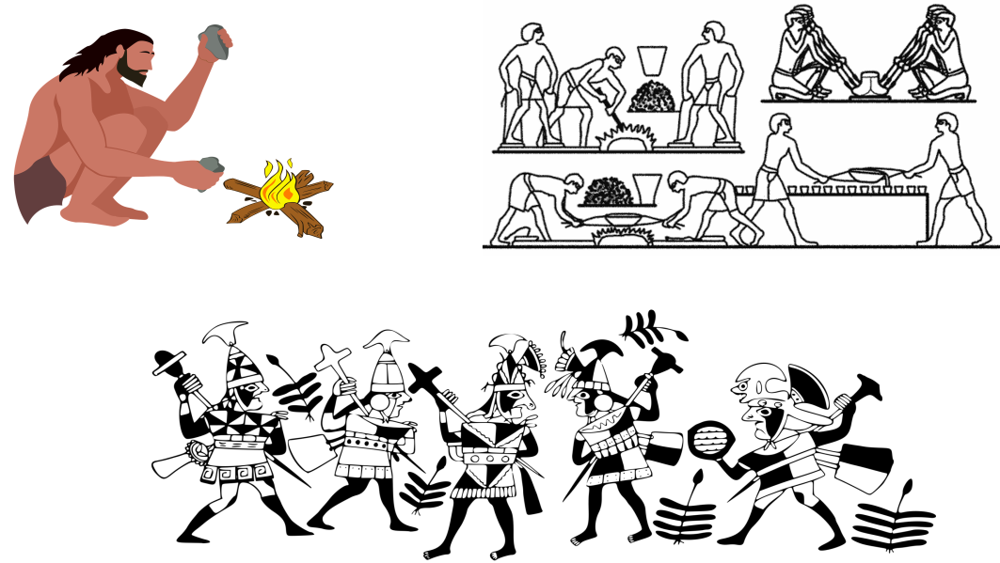
- Contexto histórico
- Ventajas
- Desventajas
¿Incendios Forestales 🤔?
“Fuego descontrolado que afecta a la cobertura vegetal”
Base Legal - DS N°017, 2009 (Reglamento de Capacidad de Uso Mayor del Suelo)
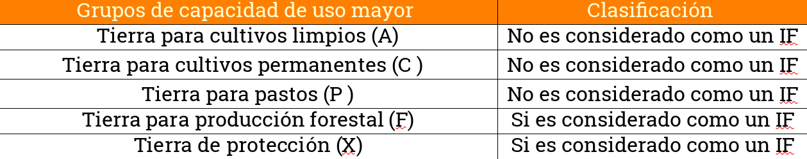
Entonces…
LAS ACTIVIDADES PECUARIAS Y AGRICOLAS SON LA CAUSA DEL 90% DE LOS IF EN AMERICA DEL SUR
Paper base 💥
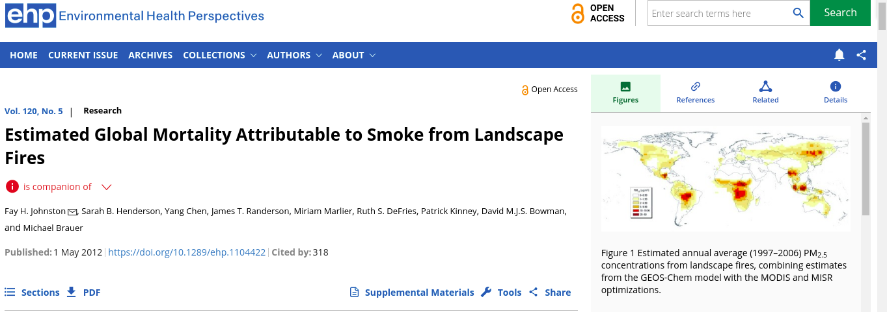 Los IF se han convertido en un problema de salud pública cada vez mayor,y el humo de los IF es la causa directa de muerte de 339’000 personas al año.
Perspectivas 📈
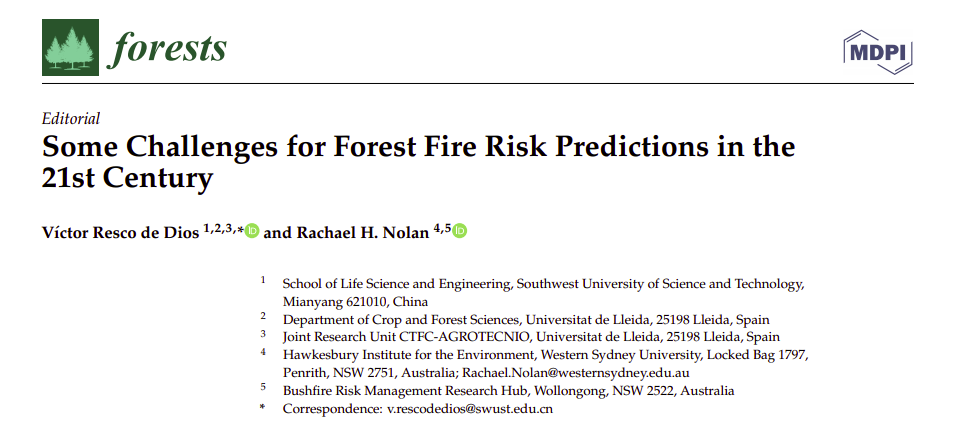
La interacción de los IF con la pandemia actual podría aumentar las admisiones hospitalarias en un 10%.
¿El Perú estamos preparado para esto?
Contexto peruano 🤔?
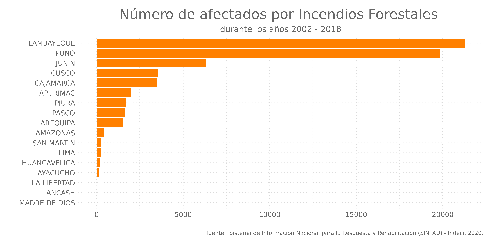
Estacionalidad
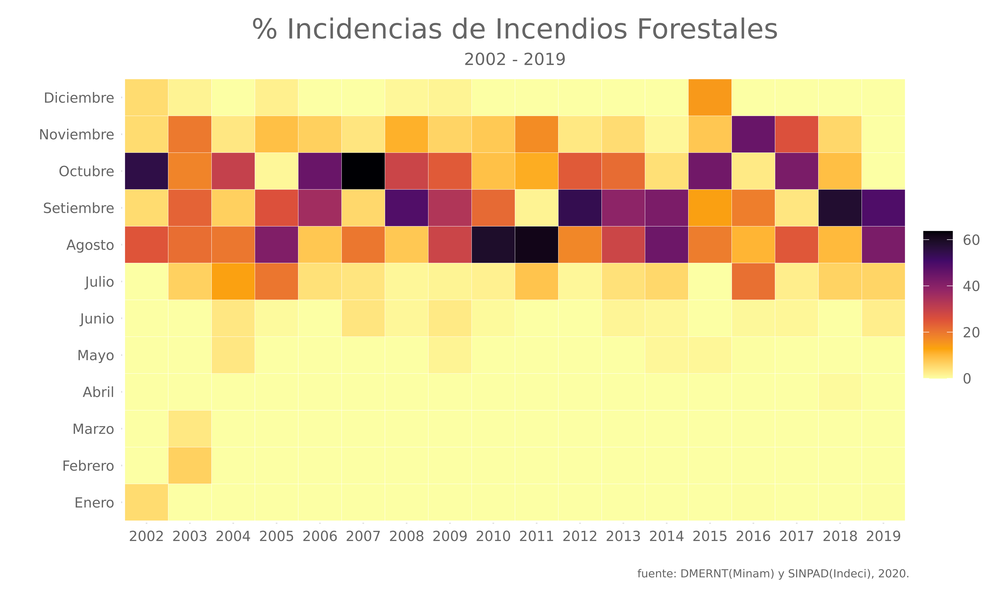 # Importancia de caracterizar los IF
* Se puede utilizar como punto de referencia para la asignación de recursos dentro de las temporadas de incendios para la gestión y prevención (corto plazo).
* Herramienta valiosa para la gestión territorial(largo plazo)
* Seleccionar áreas críticas para el monitoreo de ecosistemas que están en riesgo.
* …
Caracterización de peligro por incendios forestales
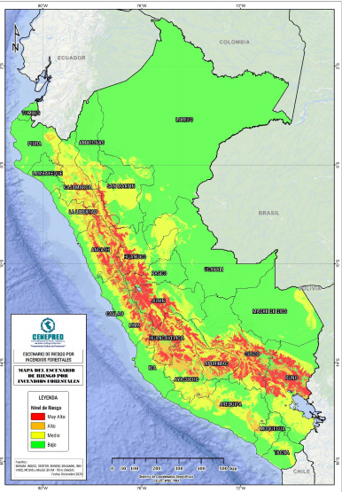
Limitaciones: Métodos subjetivos que pueden diferir de un experto a otro y también pueden sufrir limitaciones cognitivas centradas en la incertidumbre y la subjetividad Pourghasemi et.,al, 2013
Enfoques alternativos
- SVM(Support vector machine)
- BRT(Boosted Regression Trees)
- RF (Random Forest)
- GLM (Generalized Linear Model)
- …
flujograma de trabajo
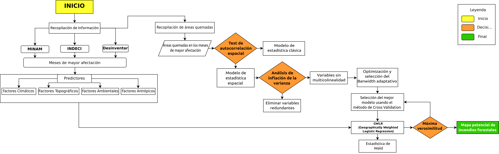
Base de datos histórica
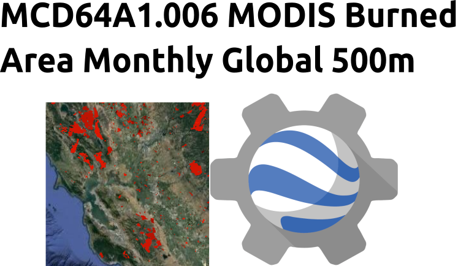
Target
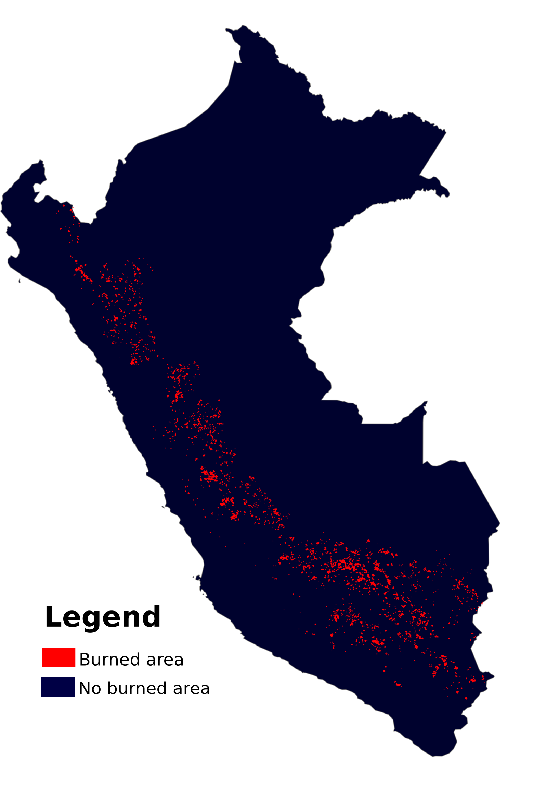
Predictores
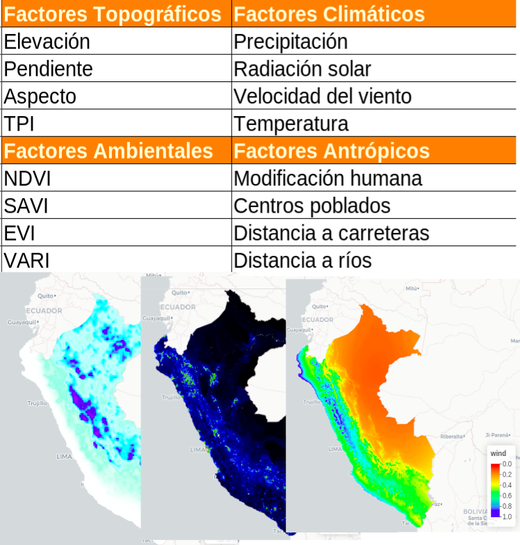
Análisis de vif
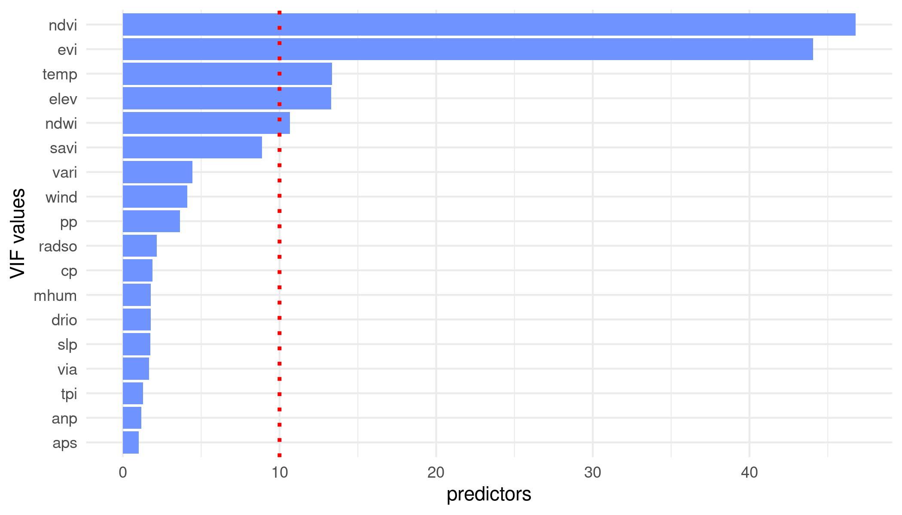
Selección del mejor modelo según ~CV
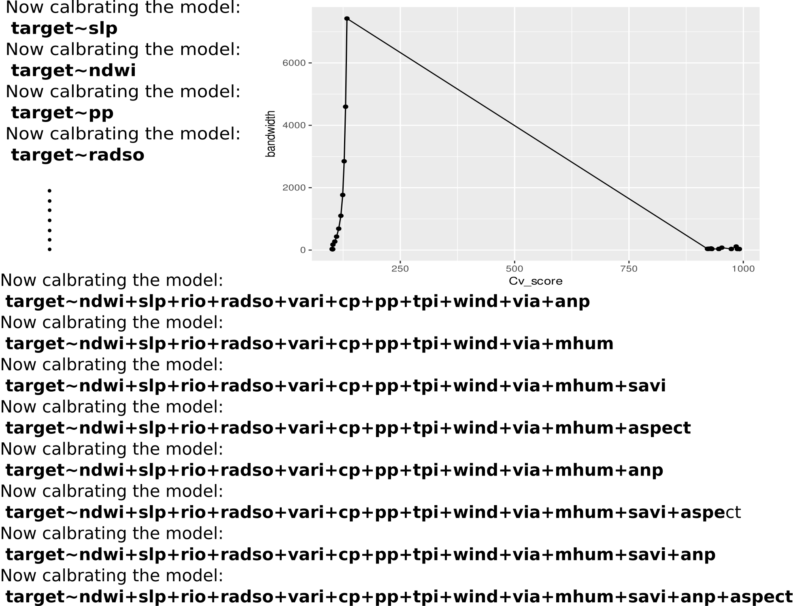
Mapa final
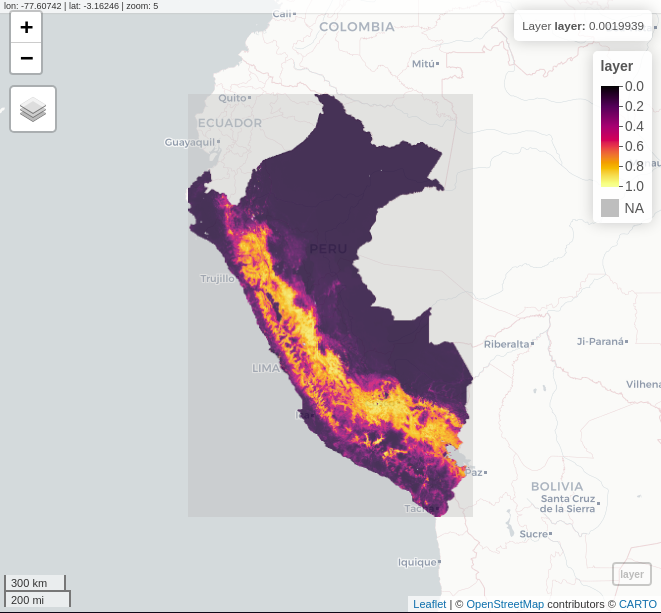Resultados a nivel distrital
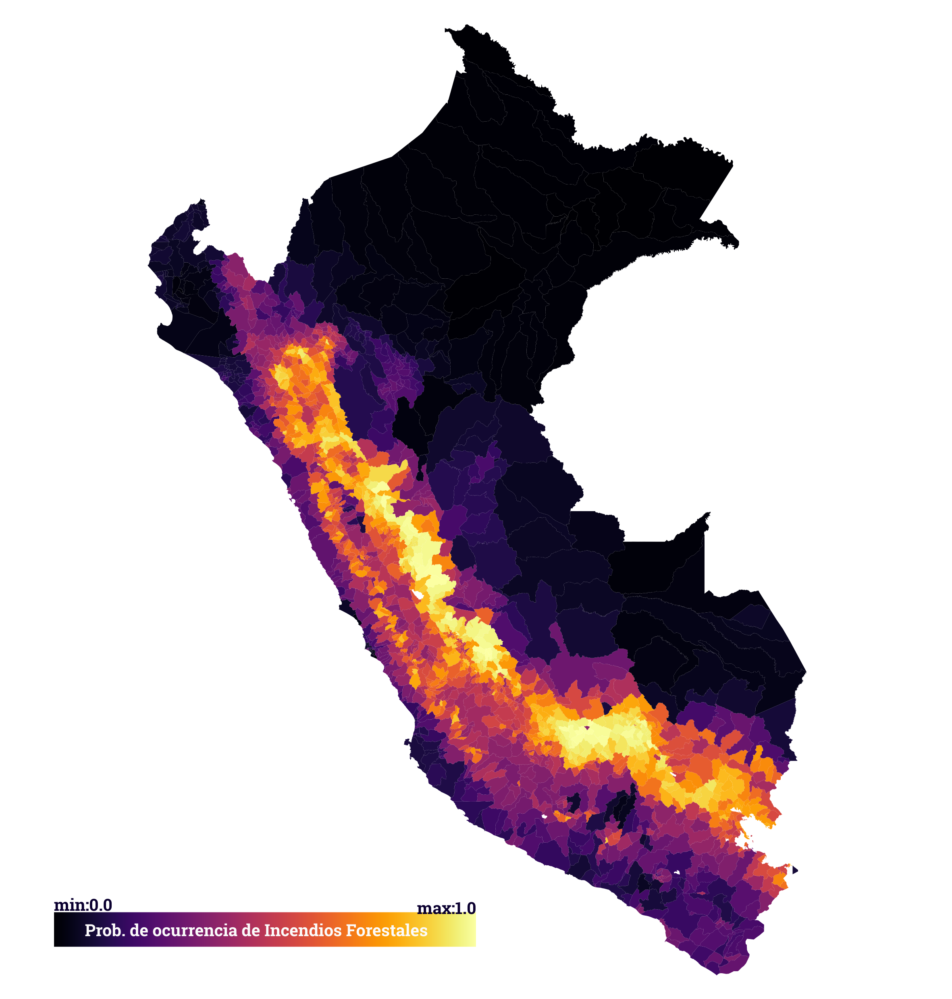
Por departamento y distrito
| Departamento | Index |
|---|---|
| Apurimac | 0.829 |
| Huacavelica | 0.644 |
| La libertad | 0.601 |
| Ancash | 0.577 |
| Puno | 0.567 |
| Distritos | index |
|---|---|
| San Pedro de Cachora - Abancay | 0.958 |
| Salcahuasi - Huancavelica | 0.952 |
| Paucartambo - Pasco | 0.950 |
| Salcabamba - Huancavelica | 0.949 |
| Pacucha - Apurimac | 0.946 |
Conclusiones
- Las variables que más influyen la modelo de forma global son la modificación humana, radiación solar, pendiente
- Se demuestra que los IF presentan patrones de autocorrelación espacial, y las zonas con mayor incidencia están en las zonas andinas.
- Los mayores incidencias de IF son en los meses de agosto-octubre.
- Los 5 departamentos con mayor susceptibilidad a IF son:
- Apurimac
- Huancavelica
- La Libertad
- Ancash
- Puno
GRACIAS!